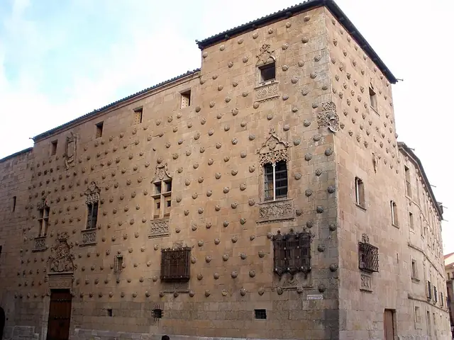

USAL
University of Salamanca
Coming in the next update University of Salamanca isn't in the App Store version yet. Get the app now and it arrives with the update.
The University of Salamanca was founded in 1218 and is the oldest university in Spain still in operation. Its main building, the Escuelas Mayores, was finished in 1533 around a cloister next to the cathedrals.
- 5Buildings
- 3Traditions
- 1517Oldest · Casa de las Conchas
- 1760Newest · Anaya Palace
Campus map and Look Around
Tap a numbered pin to see that building from the street with Apple Look Around.
Planning the visit
- Fly intoAdolfo Suárez Madrid–Barajas Airport (MAD)
Madrid–Barajas is the main international gateway for Salamanca. From Madrid, trains and buses run west to Salamanca.
- Getting aroundWalking
The old town is compact and largely pedestrian. The Plaza Mayor, the Casa de las Conchas, the Clerecía and the Patio de Escuelas are all a few minutes' walk apart.
- Colors and teams
Spanish is the language of classes and daily life, and Salamanca is one of Spain's most popular cities for learning it.
- Where to stayFind hotels near University of Salamanca on Expedia Compare on Booking.com Vacation rentals on Vrbo
Stamped! may earn a commission when you book through these links.
5 buildings to stamp
-
Escuelas Mayores
Patio de Escuelas 1, 37008 Salamanca
The university's main building grew around a cloister from the early 1400s and was finished in 1533. Its Plateresque west façade, carved in the early 16th century, shows the Catholic Monarchs and is the most famous image of the university.
- Built
- 1533
- Architect
- Unknown (façade attributed to Juan de Talavera)
- Style
- Plateresque
- Today
- Historic university building
-
Photo: José Luis Filpo Cabana, CC BY 3.0, via Wikimedia Commons Colegio del Arzobispo Fonseca
Calle Fonseca, Salamanca
Archbishop Alonso de Fonseca founded this college in 1519 for students from Galicia, and its building was finished in 1578 around a Renaissance cloister. It is the only one of Salamanca's old colegios mayores still standing, and its courtyard hosts summer concerts.
- Built
- 1578
- Architect
- Diego de Siloé; Rodrigo Gil de Hontañón; Juan de Álava
- Style
- Plateresque
- Today
- Postgraduate residence and cultural venue
-
Photo: Jose Luis Filpo Cabana, CC BY 3.0, via Wikimedia Commons Anaya Palace
Plaza de Anaya, Salamanca
After the 1755 Lisbon earthquake damaged the old Colegio de San Bartolomé, founded in 1401, this Neoclassical building replaced it from 1760. Its columned portico and grand staircase now lead to the Faculty of Philology.
- Built
- 1760
- Architect
- José de Hermosilla; Juan de Sagarvinaga
- Style
- Neoclassical
- Today
- Faculty of Philology
-
Photo: Carlos Reusser Monsalvez from Santiago, Chile, CC0, via Wikimedia Commons La Clerecía
Calle de la Compañía, Salamanca
Queen Margaret of Austria sponsored this huge Jesuit college, begun in 1617 and finished in 1754. Its Baroque towers rise over the old town, and the building is now the seat of the Pontifical University of Salamanca.
- Built
- 1754
- Architect
- Juan Gómez de Mora; Andrés García de Quiñones
- Style
- Baroque
- Today
- Pontifical University of Salamanca
-

Photo: Zarateman, CC0, via Wikimedia Commons Casa de las Conchas
Calle de la Compañía, Salamanca
University professor Rodrigo Arias de Maldonado built this house between 1493 and 1517 and covered its façade with more than 300 scallop shells, the symbol of the Order of Santiago. It now houses a public library.
- Built
- 1517
- Style
- Late Gothic / Plateresque
- Today
- Public library
._Retablo.jpg){kind=link}
._Patio.jpg){kind=link}
.jpg){kind=link}

3 traditions to check off
Stamped! keeps these as a checklist, so you can tick each one off on the visit.
Find the Frog
Hidden among the carvings of the university's Plateresque façade is a small frog sitting on a skull. Legend says a student who spots it will pass their exams, so visitors crowd the Patio de Escuelas searching for it.
The Sky of Salamanca
In the Escuelas Menores you can see Fernando Gallego's "Cielo de Salamanca", a painted sky of constellations and zodiac signs that once covered part of the vault of the old university library.
Spot the Vítores
Red monograms called vítores, made from the letters of the word "victor", are painted on university walls to honor people who earned a doctorate. Look for them around the Patio de Escuelas and the streets of the old town.
History
Founded 1218
From Wikipedia
The University of Salamanca is a public research university in Salamanca, Spain. Founded in 1218 by King Alfonso IX, it is the oldest university in the Hispanic world and the fourth oldest in the world in continuous operation. It has over 30,000 students from 50 nationalities.
The app's quiz · 10 questions
How well do you know University of Salamanca?
The same quiz as in Stamped!: name the landmark, its architect, its style or the year it was finished. Every round is different.
Know University of Salamanca well?
Students and alumni know the traditions best. Suggest one we're missing, a building worth a stamp, a fix, or your own photo of a building. Every suggestion is checked before it goes into the app.
More schools around the world
- Aalto University
- Durham University
- King's College London
- KU Leuven
- McGill University
- National Autonomous University of Mexico
- Trinity College Dublin
- University College London
- University of British Columbia
- University of Cambridge
- University of Coimbra
- University of Edinburgh
- University of Glasgow
- University of Melbourne
- University of Oxford
- University of Padua
- University of Paris (Sorbonne)
- University of St Andrews
- University of Sydney
- University of Tokyo
- University of Toronto
- Uppsala University
Stamp all 5 on your visit.
Tour University of Salamanca in 3D before you go, add it to a college road trip and earn a passport stamp at every building. Free on iPhone, iPad and Mac.
Download on theApp StoreEnjoying the guides? Leave a tip to help keep new cities coming.